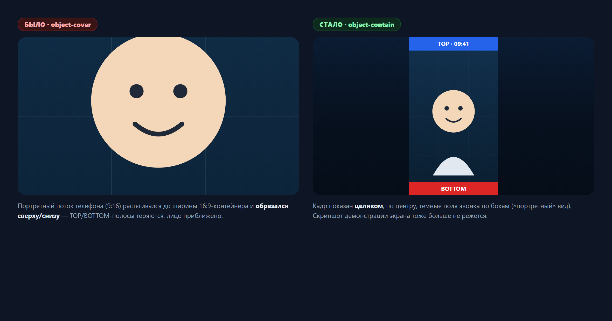
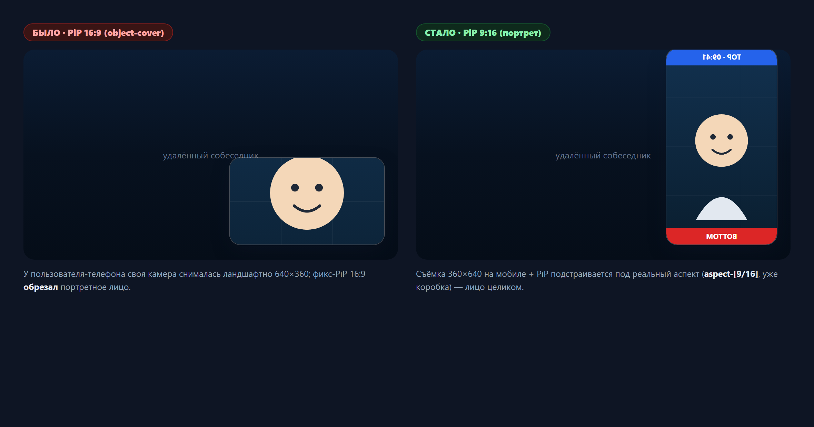
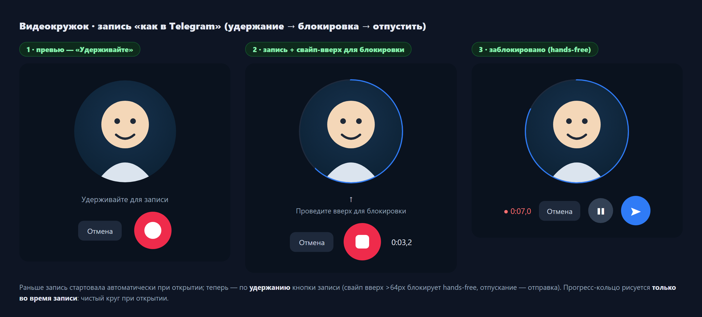
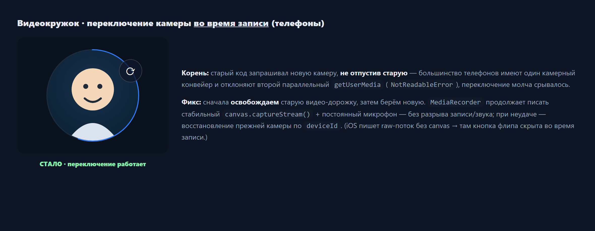

06.07.2026 закрыл болезненную реалтайм-регрессию и продвинул админ-консоль. Видеозвонок: удалённый портретный поток телефона (9:16) в полноэкранном ландшафтном контейнере (16:9) растягивался и обрезался сверху/снизу — виден был только центр; то же для демонстрации экрана. Переключение object-cover → object-contain показывает кадр целиком, letterbox-полями звонка по бокам, и никогда не режет шаринг экрана (камера↔экран у пира меняются через replaceTrack без сигнала — различить их на приёме нельзя, поэтому единственно верное решение — не кадрировать). Плюс своя камера пользователя-телефона теперь снимается портретно (360×640), а self-view PiP подстраивается под реальный аспект. Видеокружки: Telegram-модель press-and-hold (удержание → свайп-вверх блокирует hands-free → отпускание отправляет), рабочее переключение камеры во время записи на телефонах (release-before-acquire — обходит NotReadableError) и чистый круг при открытии. Админ-консоль: аналитика (группировка метрик/валюта/донат), клик из плиток командного центра в отфильтрованные списки, читаемые названия в гео, клиентская пагинация + колоночный фильтр в общей таблице, фильтрация всего лога модерации, % одобрения в сводке, размер страницы 10 → 50, deep-link-фильтры. Аудит полей: все 20 админ-страниц сверены с бэкендом — 87 недостающих полей добавлены (аддитивно/защитно) в 12 файлах.
| Область | Что было / причина | Что сделано | Файлы |
|---|---|---|---|
| Видеозвонок — портретный поток / шаринг экрана обрезались bug закоммичено |
Портретный (узкий) поток с телефона растягивался на всю ширину и зумился/кадрировался — видно было только центр. То же для демонстрации экрана телефона. Причина — object-cover в полноэкранном ландшафтном контейнере. | object-cover → object-contain у удалённого <video>: кадр показывается целиком, по центру, тёмными letterbox-полями звонка по бокам. Единственное поведение приёмника, которое никогда не режет шаринг экрана (камера↔экран у пира приходят через replaceTrack без сигнала). | GlobalAudioCallModal.tsx (удалённый <video>, ~L2152-2160) |
| Видеозвонок — своя камера у пользователя телефона bug закоммичено |
CAMERA_CONSTRAINTS были жёстко 640×360 на всех 4 точках getUserMedia; на телефоне своя камера снималась ландшафтно, self-view PiP (16:9) обрезал портретное лицо, собеседник видел «боком». | CAMERA_CONSTRAINTS_PORTRAIT (360×640) + callCameraConstraints(portrait): на мобиле — портрет (все 4 точки через isMobileRef), на десктопе — ландшафт. Self-view PiP подстраивается под реальный аспект (aspect-[9/16] / уже коробка). | GlobalAudioCallModal.tsx, webrtcTuning.ts |
| Видеокружок — Telegram press-and-hold redesign закоммичено |
Запись стартовала автоматически при открытии — не было кнопки записи и жеста удержания. | Открытие → живое превью → удержание кнопки записывает → свайп-вверх >64px блокирует hands-free → отпускание отправляет; быстрый тап блокирует (не шлёт <1с клип); Enter/Space стартует locked-запись. Pointer capture + touch-none; кнопка записи держится смонтированной при переходе превью→запись. | ChatVideoNoteRecorder.tsx |
| Видеокружок — переключение камеры во время записи (телефоны) bug закоммичено |
Смена фронт/тыл во время записи молча срывалась: старый код запрашивал новую камеру, не отпустив старую — телефоны с одним камерным конвейером отклоняют второй параллельный getUserMedia (NotReadableError). | Release-before-acquire: сначала освобождаем старую видео-дорожку, затем берём новую (MediaRecorder пишет стабильный canvas.captureStream() + постоянный микрофон — без разрыва); при неудаче — восстановление прежней камеры по deviceId. (iOS: raw-поток без canvas → флип во время записи скрыт.) | useVideoNoteRecorder.ts |
| Видеокружок — лишний контур круга при открытии bug закоммичено |
Круг открывался с бледным кольцом (ring-1 ring-white/15 + трек прогресс-кольца) — читалось как лишний контур ещё до старта записи. | Убран wrapper-ring; ChatVideoNoteRing рендерится только при phase==='active' — чистый круг при открытии, прогресс-кольцо только во время записи. | ChatVideoNoteRecorder.tsx |
| Админ — аналитика: группировка / валюта / донат-итоги feature закоммичено |
Метрики аналитики шли плоским списком без группировки; денежные значения без валюты; пончиковые диаграммы без сводных итогов и _pct. | Группировка метрик (metricGroupOf), детект денежных метрик (isMoneyMetricKey) + локализация валюты, донат-итоги и companion-списки _pct у бара и пирога. | AdminAnalyticsView.tsx, analyticsMetricUtils.ts (+тест analyticsMetricGrouping) |
| Админ — командный центр: клик из плиток в списки feature закоммичено |
Плитки командного центра были статичными; графикам не хватало подписей/ориентации. | Переходы из плиток в отфильтрованные списки (deep-link), подписи/ориентация графиков (AdminBar, commandCenterChartData). | AdminCommandCenterPage.tsx, charts/AdminBar.tsx, commandCenterChartData.ts |
| Админ — общая таблица: клиентская пагинация + колоночный фильтр feature закоммичено |
Общая Table не имела синхронной клиентской пагинации в связке с колоночным фильтром; пустая пагинация на одной странице. | Клиентская пагинация синхронно с колоночным фильтром + hideOnSinglePage; размер страницы админ-списков 10 → 50; deep-link-фильтры на Диспетчерах/Поездках. | Table.tsx, AdminDispatchersPage.tsx, AdminTripsPage.tsx, cargo/cargo-types/drivers/offers |
| Админ — гео: читаемые названия городов/стран/регионов change закоммичено |
Гео-панель показывала сырые коды/идентификаторы вместо читаемых названий. | Новый useGeoNames — резолв читаемых названий городов/стран/регионов; защитный парсинг payload гео. | geo/useGeoNames.ts (new), GeoInsightsPanel.tsx, geoData.ts |
| Админ — лог/сводка модерации + приглашения change закоммичено |
Лог модерации фильтровал только видимую страницу; в сводке не рендерился % одобрения для паспорта (cm/dm разбивка съедалась); у менеджеров водителей — лишняя пагинация приглашений. | Фильтрация всего списка лога (moderationLogUtils), корректный % одобрения (сумма cm+dm), убрана лишняя пагинация в секциях приглашений. | AdminModerationLogPage.tsx, moderationLogUtils.ts (+тест), AdminModerationSummaryView.tsx, Invitations/Pending секции |
| Админ — аудит покрытия полей (20 страниц) feature аудит |
UI молча отбрасывал часть полей бэкенда (OpenAPI + типы + adminHelpers): 37 «должны показываться» пробелов. Сводка модерации не рендерила «одобрено/отклонено сегодня» для паспорта. | 87 полей выведено (аддитивно/защитно — каждое рендерится только при наличии): карточки cargo/driver/dispatcher, «Пульс платформы» командного центра, KYC/сессии/рейтинг пользователей, паспорт cm/dm + топ-причины, гео-таблица активных водителей. 5 из 6 находок ревью исправлены (id-leak, normalizeBoolean, seed label из ключа карты, _pct у пирога). | admin/{cargo,drivers,dispatchers,command-center,moderation,geo}/**, AdminAnalyticsView.tsx; отдельный отчёт admin-field-audit-06.07.26.html |
// src/components/shared/GlobalAudioCallModal.tsx — удалённый <video> (~L2152-2160) - 'absolute inset-0 h-full w-full bg-black object-cover ...' // портрет зумится до ширины и режется сверху/снизу + 'absolute inset-0 h-full w-full object-contain transition-opacity duration-300' // кадр целиком, letterbox // object-contain показывает полный кадр при любом аспекте: портретная камера и шаринг экрана // больше не кадрируются; тёмные поля — штатный градиент звонка (снят bg-black). JS/логика не тронуты.
Изменения дня собраны в 2 коммита ветки staging плюс последующий аудит покрытия админ-полей. Технические записи — в bug.md (корень репозитория, записи 06.07 в 15:15, 16:25, 17:45).
Ниже — реальные пиксельные репродукции, отрендеренные headless-Chrome (Playwright/Chromium) из фактических классов шипнутого кода: letterbox видео (object-fit), аспект self-view PiP (aspect-[9/16] vs aspect-video) и оверлей записи кружка — это чистый CSS, поэтому браузерный рендер идентичен живому приложению; синтетическая портретная тест-карта заменяет камеру телефона, чтобы поведение «обрезка vs letterbox» было видно напрямую. Живые сценарии (connected-2-peer звонок, камера + HTTPS, админ-логин) в этой среде гейтятся — для них готов capture-video-fixes.mjs (Playwright), запускаемый на dev-сервере против staging.




| Артефакт | Путь |
|---|---|
| Журнал исправлений (записи 06.07) | bug.md (15:15 · 16:25 · 17:45) |
| Краткая сводка для PM (Excel) | daily-report/06.07.26/report-06.07.26.xlsx |
| Отдельный отчёт аудита админ-полей | daily-report/06.07.26/admin-field-audit-06.07.26.html |
| Видеозвонок: letterbox + портретная камера + PiP | src/components/shared/GlobalAudioCallModal.tsx · src/utils/webrtcTuning.ts |
| Видеокружки: press-and-hold + переключение камеры | src/pages/chat/components/ChatVideoNoteRecorder.tsx · src/hooks/useVideoNoteRecorder.ts |
| Админ-аналитика: группировка/валюта/донат | src/components/shared/admin/AdminAnalyticsView.tsx · analyticsMetricUtils.ts |
| Общая таблица: клиентская пагинация + фильтр | src/components/shared/table/Table.tsx |
| Командный центр / гео | src/pages/admin/command-center/* · src/pages/admin/geo/useGeoNames.ts |
| Скриншоты (репродукции) + capture-скрипт | daily-report/06.07.26/img/ · daily-report/06.07.26/capture-video-fixes.mjs |
| Отчёт предыдущего рабочего дня | daily-report/04.07.26/index.html |